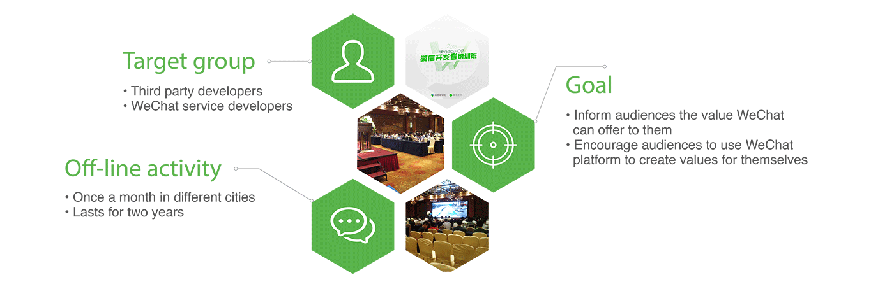
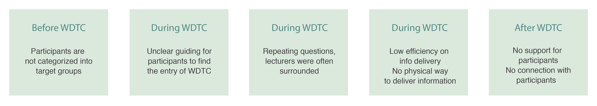

Background
WeChat is the most popular instant messaging app in China. Combined with WeChat official accounts, WeChat Pay service explores
O2O and off-line shopping experience. With WeChat Pay enabled on mobile phone, users can make transaction payment at anytime and anywhere, suchas in ordering taxi, supermarkets, hospitals and gas station. WeChat Developer Training Class(WDTC) is one of the methods to expand WeChat Pay around the China. However, this WDTC had been evaluated as inefficient and my job was to figure out why it was inefficient and explored solutions to optimize it.

Problem Define
- Service Blueprint

Through analysis of WDTC’s service blueprint, 5 potential problems were found, which may lead to low conversion rate.
